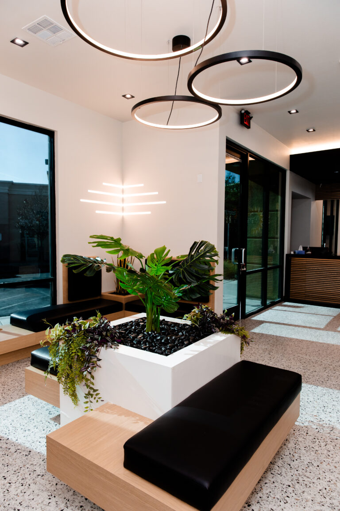

Brush teeth that line up.
Teeth that sit in a row are simpler for a child to clean, and simpler to keep clean.
Orthodontic treatment timed to a growing jaw, from the first assessment through to the day the braces come off.

Crowding can show up early, as one tooth sitting in front of another.
Waiting to see whether it settles by itself is a reasonable instinct.

Growth can be guided while it is still happening.
Once growth finishes, the same crowding has to be corrected by moving teeth alone.
That is the argument for an early assessment. Not to start treatment sooner, but to find out whether waiting costs anything.
Our own site cites the American Association of Orthodontists, which recommends a first orthodontist visit around age seven, fetched 30 July 2026.
That is the AAO's recommendation as our page states it, not a separate claim of our own.
Teeth that sit in a row are simpler for a child to clean, and simpler to keep clean.
Our own site notes that teeth which do not line up can make speaking, biting and chewing harder, fetched 30 July 2026.
Teeth in a row spread the load, rather than wearing the same few points every day.

Cost is part of what postpones an assessment. The ADA Health Policy Institute reports that 55% of adults aged 65 and older have no dental benefits, fetched 30 July 2026. Dental visits track coverage directly in that same source. In 2023, 53% of privately insured adults had a dental visit, against 16% of those with no dental insurance.
Those figures measure adults, not children.
A clinician looks at the bite, the spacing and how the adult teeth are arriving. Digital X-rays are taken where they add something.
You hear what is happening now and what is likely next, in plain words. Not every child needs braces straight away.
Impressions and images become the plan for what moves, and in what order.
The braces go on at their own appointment. Your clinician tells you beforehand what that visit involves for your child.
Braces are checked and adjusted at intervals your clinician sets. Each visit reviews progress and makes small changes.
Teeth drift back without retention, so the last stage matters as much as the first.

We are one dental group running seven offices across Las Vegas, North Las Vegas and Henderson. One roster of clinicians, one brand, one domain.
The common alternative in this market is a referral out to a separately owned or separately branded practice. Where each office is owned separately, consistency between offices cannot be promised, only hoped for.
Orthodontic care is followed across a run of appointments, so continuity is the whole point. Dr. Karthikeyan Subramani holds an MSc in Orthodontics and Dentofacial Orthopedics. He received the Milo Hellman Award from the American Association of Orthodontists in 2019, per our own team page, fetched 30 July 2026.
Our Lake Mead office is rated 4.5 stars across 506 patient reviews on Birdeye, fetched 30 July 2026.


We quote after an assessment, because the plan depends on what we find. We do not publish treatment prices. A number given before an examination would only change afterwards.
Orthodontic coverage depends on your plan and on the age of the patient. Delta Dental, Cigna, MetLife and the Culinary Health Fund are among the carriers listed on our insurance and financing page. Network status varies by office and by plan. Contact the office you want with your plan details before you book.
We will not describe orthodontic treatment as painless. Your clinician will tell you what to expect at the fitting and after each adjustment for your child.
New patients start with our $45 exam and X-ray. Seniors in the family pay $29 for the same exam and X-ray.
Both prices are published on our own site and were current on 30 July 2026.
Payment plans are available through Care Credit, Cherry, Sunbit and Lending Club. Terms are set by the lender and are subject to credit approval. They are not terms offered by this practice.